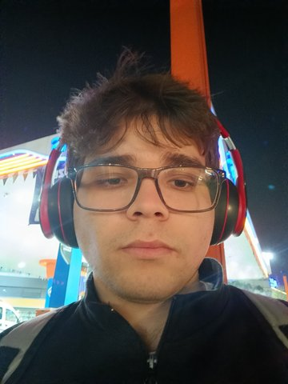
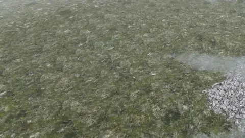
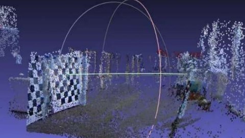

3Dの世界と、それを捉えるビジョンシステムを作っています。分野はコンピュータグラフィックス、コンピュータビジョン、ゲームアートです。最近は、ドローンで撮影した実際の地面のスキャンから、ウェブブラウザで動く世界を丸ごと作っています。
趣味はバスケットボールとビデオゲームです。


ドローン写真から3Dガウシアンスプラッティングで数平方メートルの実際の地面を取り込み、継ぎ目のないタイルにして、生成した数キロメートルの地形に敷き詰めます。どの素材をどこに置くかは地形そのものが決め、川はメートル単位で刻まれ、同じ写真から測った水で満たされます。すべてブラウザ上で動きます。

限られたハードウェアと予算の中で、NVIDIA Jetson Orin NanoがガウシアンスプラッティングSLAMをライブで、つまり事前に作った3Dマップではなくカメラの動きに合わせて実行できるかを確かめた実験です。 Gaussian-SLAM（Yugayら）をもとに、CUDA 12.2とJetsonのメモリに合わせて調整しました。次の段階として、ROS 2での経路計画とSLAMを予定していました。